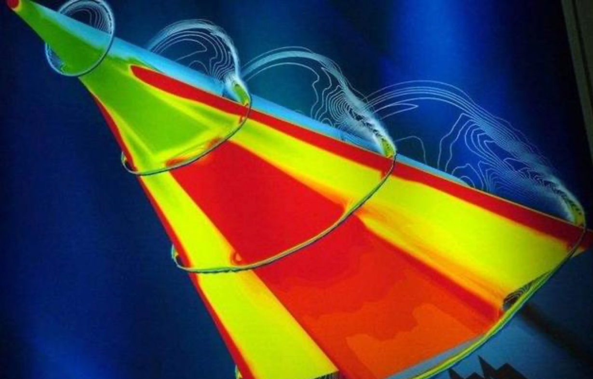
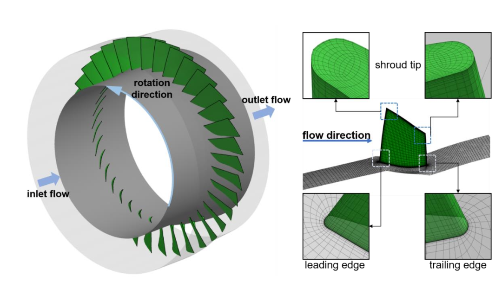
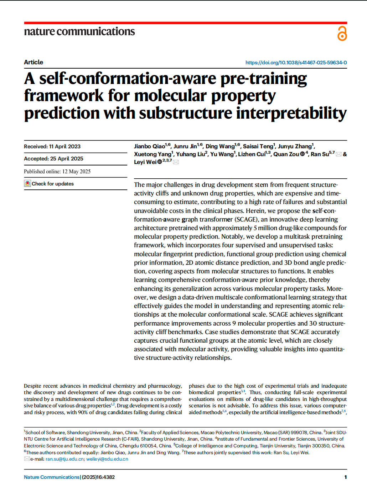
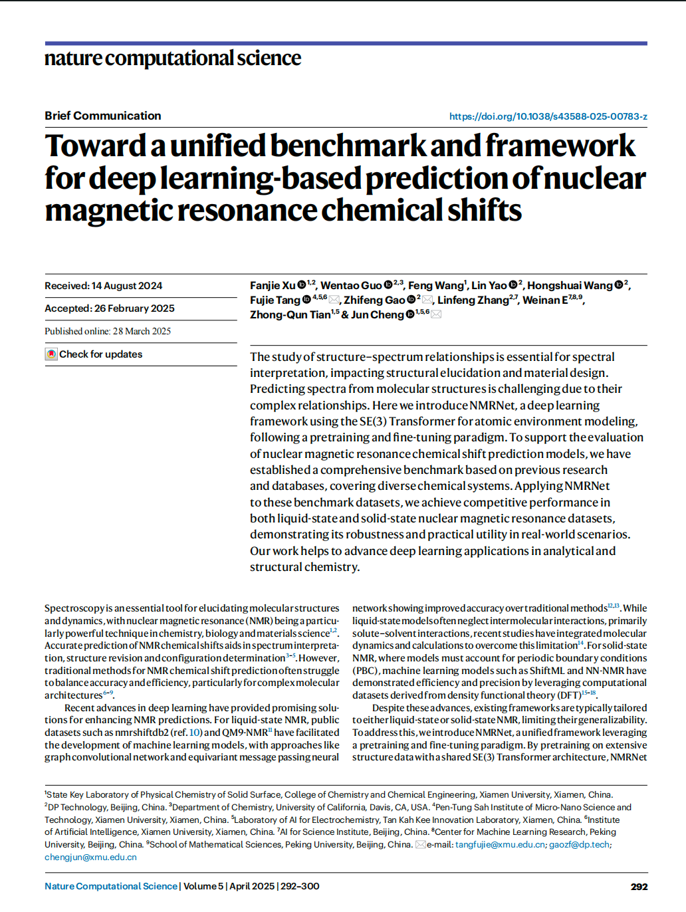
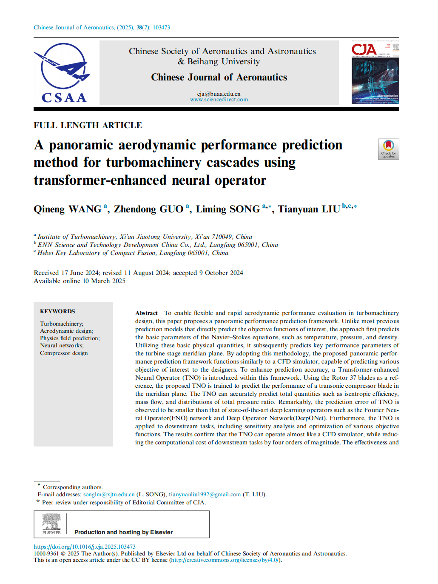
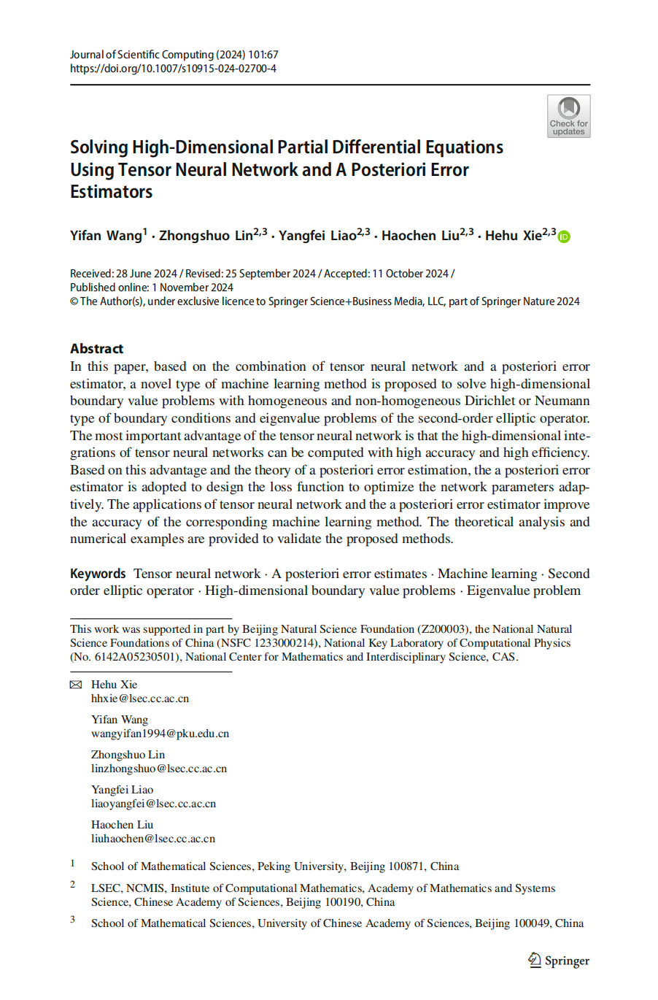
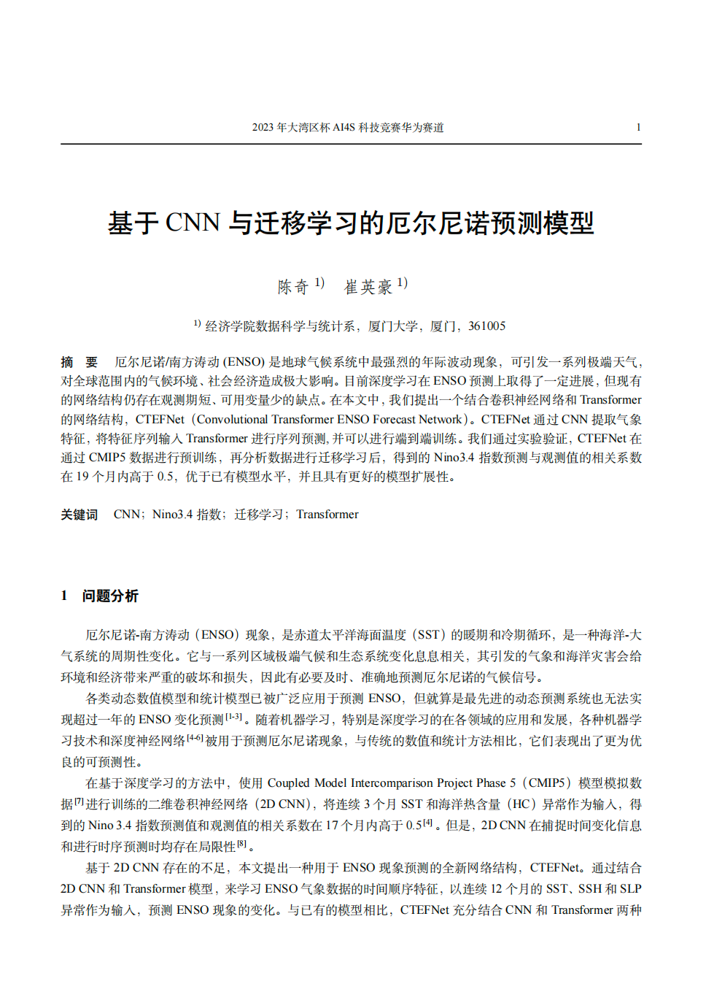
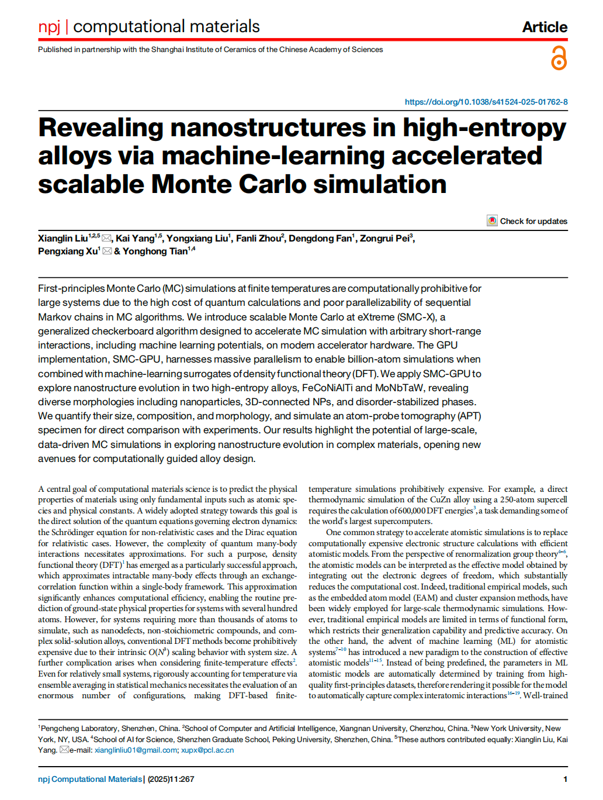

赛题筛选：提出科学问题
竞赛组织：资源共建共享
正式竞赛：推动生态建设
社区规模小组：深度学习求解偏微分方程
加入小组- 深度学习为偏微分方程（PDE）的求解提供了新范式：物理信息神经网络（PINN）将PDE残差嵌入损失函数，实现无网格求解；傅里叶神经算子（FNO）则学习参数到解的无限维映射。然而，现有方法仍面临关键挑战：一是PINN难以精确捕捉激波等间断解，易产生过平滑；二是自适应界面方法需预先知道间断位置，而实际问题中激波位置未知且动态演化；三是神经算子在外推任务（如超分辨率、极端参数）中泛化能力有限；四是物理信息型算子（pi-FNO）依赖数值微分，在粗分辨率下误差显著。为解决上述问题，研究者提出结合Rankine-Hugoniot条件的自适应网络（RH-APINN），自动学习激波位置并划分子域；以及多级物理信息傅里叶神经算子（Mpi-FNO），通过分阶段训练增强外推能力并降低微分误差。这些工作为深度学习求解非线性PDE，特别是含间断和强外推场景，提供了有效改进思路。
- 本任务旨在为AI4PDE提供一个开放的协作平台，促进研究者之间的交流与合作。
以下是一些深度学习求解偏微分方程的案例示例：
- 一、函数类学习方法
- 1.1 高维问题
- 2018，深度里兹方法（DRM）使用PDEs的离散能量方程构造损失函数。
- 2018，深度伽辽金方法（DGM）使用PDEs的残差构造损失函数，求解了抛物型PDEs。
- 2019，物理信息网络（PINN），将PDEs的残差嵌入进损失函数，以此作为物理约束。
- ......
- 1.2 自适应策略
- Lu L, Meng X, Mao Z, et al. DeepXDE: A deep learning library for solving differential equations[J]. SIAM review, 2021, 63(1): 208-228.
- Gao Z, Yan L, Zhou T. Failure-informed adaptive sampling for PINNs[J]. arXiv preprint arXiv:2210.00279, 2022.
- Tang K, Wan X, Yang C. DAS-PINNs: A deep adaptive sampling method for solving high-dimensional partial differential equations[J]. Journal of Computational Physics, 2023, 476: 111868.
- Zeng S, Zhang Z, Zou Q. Adaptive deep neural networks methods for high-dimensional partial differential equations[J]. Journal of Computational Physics, 2022, 463: 111232.
- ......
- 1.1 高维问题
- 二、算子类学习方法
- DeepOnet、FNO、physics-informed neural operators (PINO)，...
- 三、PDE大模型
- In-context operator learning、PDEformer、OmniArch,...
- 四、基准评测
- PDEBench、CFDBench、PDENNEval、CFDONEval,...
- 五、计算套件
- DeepXDE、MindFlow、Mind SciAI,...
以下是一些深度学习求解偏微分方程的相关资源：
以下是深度学习求解偏微分方程的讨论主题：
- 多保真度数据融合 (Multi-fidelity PINN) 【最后回复时间：2026-01-13 16:58:46】
- 针对相场方程的自适应激活函数 (Adaptive PINN) 【最后回复时间：2026-01-13 16:58:31】
- 用于偏微分方程组的对称性保持神经网络 (SPNN-PDES) 【最后回复时间：2025-08-20 16:42:58】
- 可解释张量网络PDE求解器 (XTN-Solver) 【最后回复时间：2024-03-08 16:42:08】
- 更多讨论主题...
微信交流群：实时互动
2025竞赛交流群1
主要讨论AI4PDE、流体力学等前沿领域
2025竞赛交流群2
主要讨论生物信息、材料科学等领域
2025竞赛交流群3
主要讨论大模型、科学计算工具等热点
作品转化：助力成果产出
获奖作品展示
科学任务案例


优秀成果展示



Chinese Journal of Aeronautics

Journal of Scientific Computing

华为MindEarth套件库

npj Computational Materials
科学发现：解决科学问题
【流体】2025年，第三届竞赛金奖获得者赖佳敏等人首次将cGANs与乘波体反设计深度融合，在解决"气动→几何"逆问题的同时，实现了高精度、高效率、高成功率的智能设计，为高超声速飞行器的工程化快速迭代提供了新的技术路径。
【PDE】2025年，第三届竞赛金奖获得者徐炀等人提出FHENN与RSMOTE等策略，解决了高波数亥姆霍兹方程高频拟合难及泊松方程反问题参数识别不稳定的问题。
【流体】2025年，第一届竞赛特等奖获得者汪祺能等人提出TNO网络 + 全景预测框架，成功解决了涡轮机械气动设计中高保真模拟计算成本高、模型复用性差的问题。
【分子】2025年，第二届竞赛金奖获得者乔剑博等人提出了一个高性能、可解释、通用性强的分子预训练框架SCAGE，有效解决了分子属性预测中结构信息不足、功能团建模粗糙、任务优化失衡等关键问题。
【PDE】2025年，第二届竞赛金奖获得者龙婷婷等人提出了两种创新的深度学习方法（RH-APINN和Mpi-FNO），分别从函数逼近和算子学习两个角度，有效解决了传统方法在间断捕捉和外推泛化方面的瓶颈问题。
【化学】2025年，第一届竞赛二等奖获得者徐凡杰（参与）等人提出了一个统一的、高性能的NMR化学位移预测框架NMRNet，并构建了高质量的基准数据集。
【材料】2025年，第一届优胜奖获得者范登栋（参与）等人提出可扩展的并行蒙特卡洛算法 SMC-X，结合机器学习势函数和GPU加速，首次实现了对十亿原子级别高熵合金中纳米结构的直接模拟，揭示了FeCoNiAlTi 和 MoNbTaW 两种典型高熵合金中复杂的纳米相演化行为。
【魔方】2024年，第二届竞赛金奖获得者杨路佳宁等人将深度学习与启发式搜索结合，提出了一种可控制难度、可模仿人类行为的魔方AI对手建模方法，为智能游戏对手的设计提供了新的理论框架和技术路径。
【气象】2024年，第一届竞赛特等奖获得者崔英豪等人提出CTEFNet模型，解决了现有方法观测期短、变量少导致的ENSO长期预测精度不足的问题。
【PDE】2024年，第一届竞赛特等奖获得者林仲烁（参与）等人提出了一种高精度、高稳定性、无需超参数调节的机器学习方法，创新性地将后验误差估计器与张量神经网络结合，解决了高维PDE求解中高维积分精度低、误差不可控、边界条件难处理等关键问题。